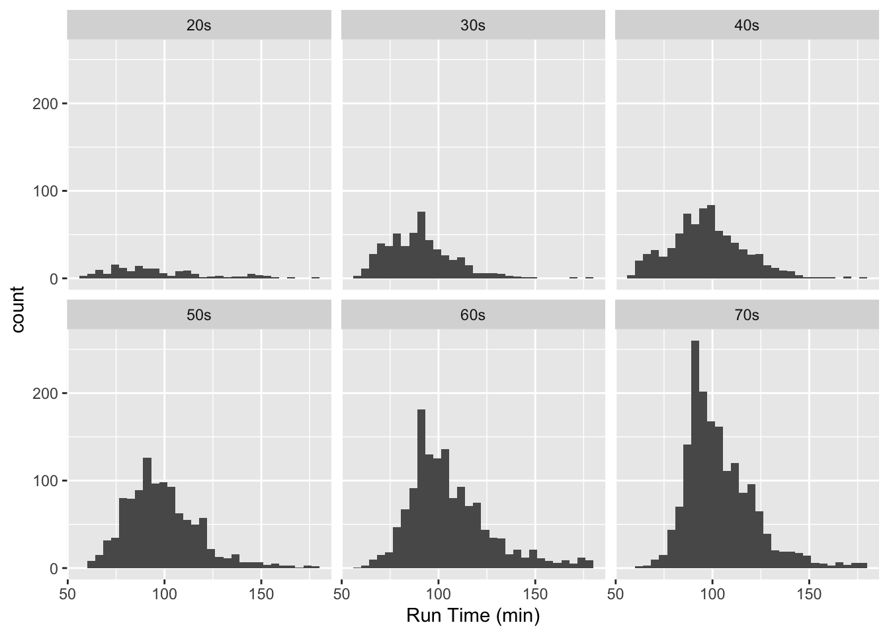
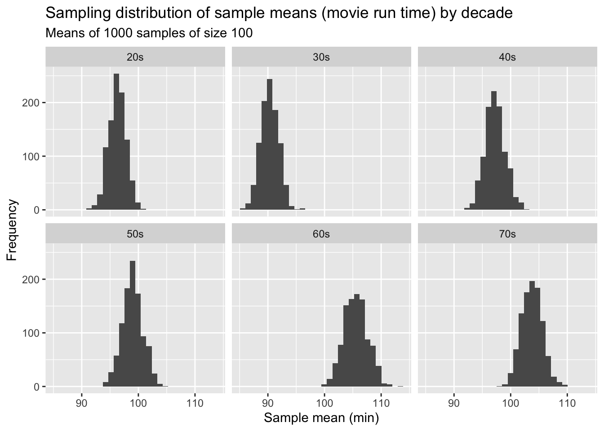
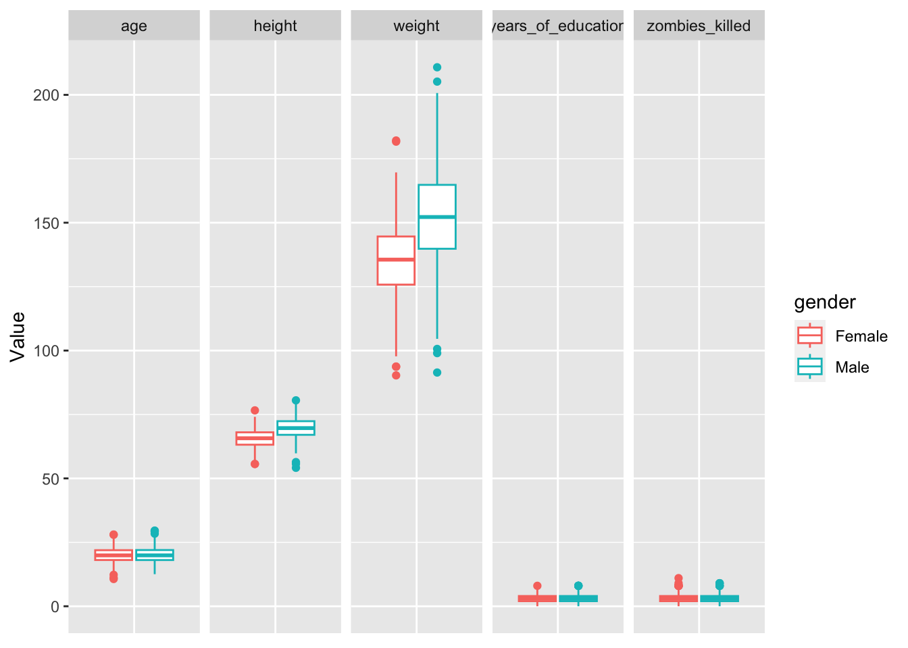
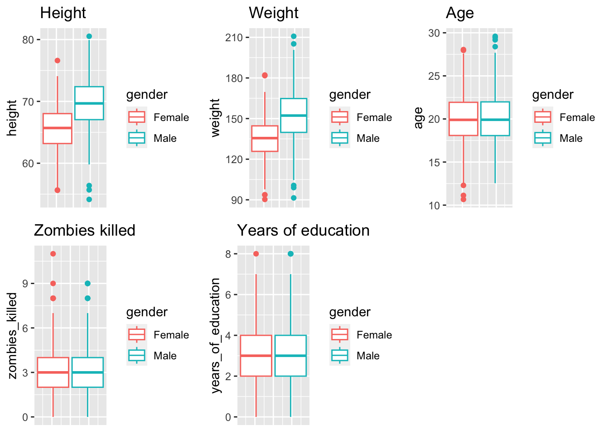
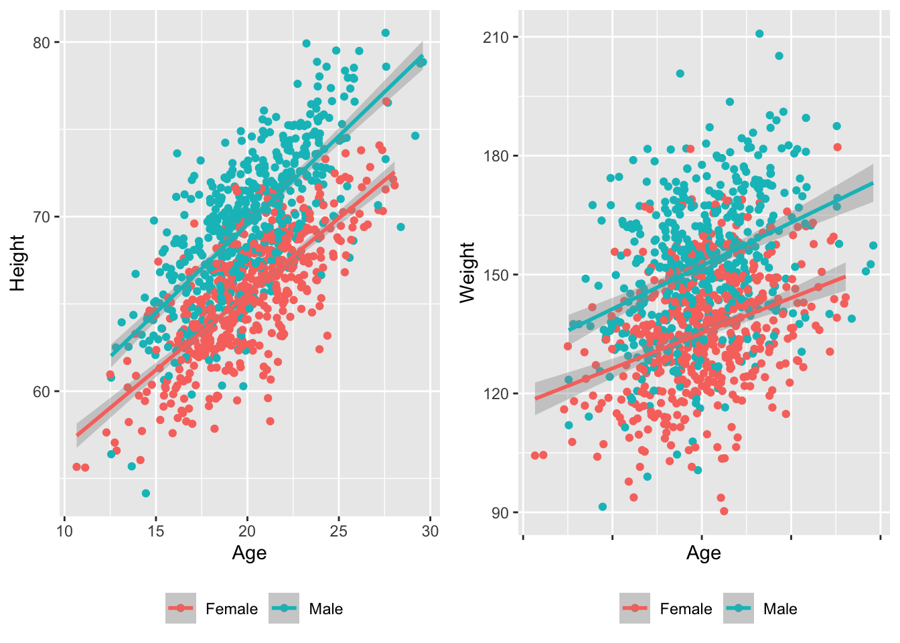
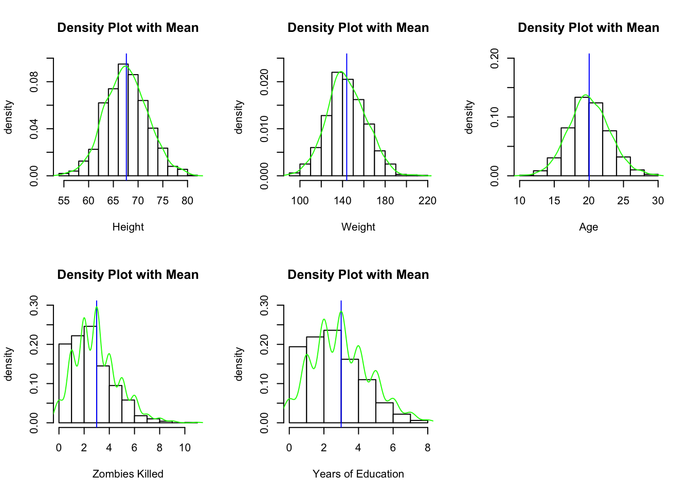
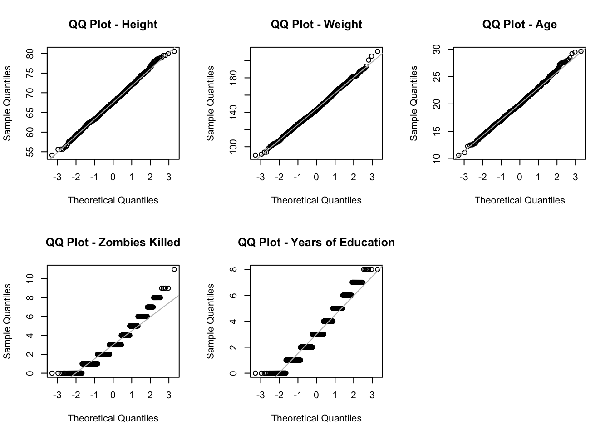
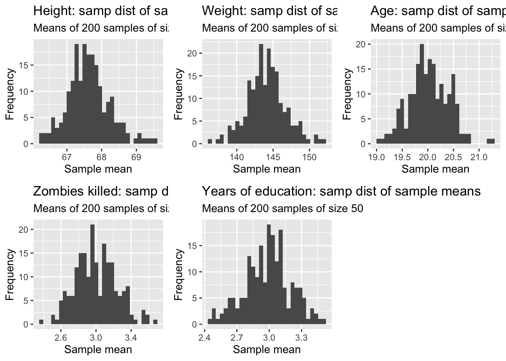

library(tidyverse)
d <- read_csv("https://raw.githubusercontent.com/difiore/ada-2024-datasets/main/IMDB-movies.csv",
col_names = TRUE)exercise-05
Exercise 05
Generate Sampling Distributions and CIs
Challenge 1
Step 1
- Loaded the “IMDB-movies.csv” dataset as a “tibble” named d
Step 2
- Filtered the dataset to include just movies from 1920 to 1979 and movies that are between 1 and 3 hours long (runtimeMinutes >= 60 and runtimeMinutes <= 180), and added a new column that codes the startYear into a new variable, decade (“20s”, “30s”, …“70s”).
d <- d %>%
filter(startYear >= 1920 & startYear <= 1979 & runtimeMinutes >= 60 & runtimeMinutes <=180) %>%
mutate(decade = case_when(startYear < 1930 ~ "20s",
startYear < 1940 ~ "30s",
startYear < 1950 ~ "40s",
startYear < 1960 ~ "50s",
startYear < 1970 ~ "60s",
startYear < 1980 ~ "70s"))
(length(d$primaryTitle)) # number of movies in filtered data set[1] 5651Step 3
- Used {ggplot2} to plot histograms of the distribution of runtimeMinutes for each decade.
p <- ggplot(d, aes(runtimeMinutes)) +
geom_histogram() +
xlab("Run time (min)") +
facet_wrap(vars(decade))
p`stat_bin()` using `bins = 30`. Pick better value with `binwidth`.
Step 4
- Calculated the population mean and population standard deviation in runtimeMinutes for each decade and saved the results in a new dataframe called results.
results <- d %>%
group_by(decade) %>%
summarize(mu = mean(runtimeMinutes),
sigma = sqrt(sum((runtimeMinutes - mean(runtimeMinutes))^2)/length(runtimeMinutes)))Step 5
- Drew a single sample of 100 movies, without replacement, from each decade and calculated the single sample mean and single sample standard deviation in runtimeMinutes for each decade.
s <- d %>% group_by(decade) %>% slice_sample(n = 100, replace = FALSE)
s_results <- s %>% group_by(decade) %>%
summarize(mean = mean(runtimeMinutes),
sd = sd(runtimeMinutes)) # sd() divides by n - 1Step 6
- Calculated for each decade the standard error around my estimate of the population mean runtimeMinutes based on the standard deviation and sample size (n=100 movies) of my single sample.
s_results <- s %>% group_by(decade) %>%
summarize(mean = mean(runtimeMinutes),
sd = sd(runtimeMinutes),
se = sd / sqrt(length(runtimeMinutes))) # added sample SE to sample resultsStep 7
- Compared these estimates to the actual population mean runtimeMinutes for each decade and to the calculated SE in the population mean for samples of size 100 based on the population standard deviation for each decade.
results <- d %>%
group_by(decade) %>%
summarize(mu = mean(runtimeMinutes),
sigma = sqrt(sum((runtimeMinutes - mean(runtimeMinutes))^2)/length(runtimeMinutes)),
se_pop = sigma / sqrt(100)) # added population-based standard error to results
(results_pop_samp <- full_join(s_results, results) %>% select(decade, mu, mean, sigma, sd, se_pop, se))Joining with `by = join_by(decade)`# A tibble: 6 × 7
decade mu mean sigma sd se_pop se
<chr> <dbl> <dbl> <dbl> <dbl> <dbl> <dbl>
1 20s 96.3 94.8 26.1 24.1 2.61 2.41
2 30s 90.3 91.5 17.3 17.4 1.73 1.74
3 40s 97.2 98.2 19.1 19.8 1.91 1.98
4 50s 98.9 97.2 19.2 15.4 1.92 1.54
5 60s 106. 105. 21.2 21.8 2.12 2.18
6 70s 104. 105. 18.0 22.1 1.80 2.21Step 8
- Generated a sampling distribution of mean runtimeMinutes for each decade by [a] drawing 1000 random samples of 100 movies from each decade, without replacement, and, for each sample, [b] calculating the mean runtimeMinutes and the standard deviation in runtimeMinutes for each decade.
- Used a standard
for( ){ }loop to generate these sampling distributions- Alternatives:
do(reps) *from {mosaic},rerun()from {purrr}, orrep_sample_n()from {infer} (see Module 16).
- Alternatives:
Attempt 1: List of lists
Failed to extract summary data from lists
Code
sample_size <- 100 # size of each sample
num_samples <- 1000 # number of samples
# create a dummy variable to hold the sample distributions
samp_dist <- list()
# set the seed so the sample is the same with every run
set.seed(1)
# loop 1000 iterations, calculate summary stats for each decade as it goes and just save those
for (i in 1:num_samples) {
samp_dist_sum[[i] <- d %>% group_by(decade) %>%
slice_sample(n = sample_size, replace = FALSE)
}
sample_mean <- vector(length = num_samples) # create a dummy variable to hold the mean of each sample
# here the dummy variable can be a vector and we can preallocate its length
for (i in 1:num_samples) {
sample_mean[[i]] <- mean(samp_dist[[i]]) # how to group by decade?
}
sample_sd <- vector(length = num_samples) # create a dummy variable to hold the SD of each sample
for (i in 1:num_samples) {
sample_sd[[i]] <- sd(samp_dist[[i]]) # how to group by decade?
}Attempt 2: Data frame
Failed to output summary stats per decade per sample into tibble
Code
sample_size <- 100 # size of each sample
num_samples <- 1000 # number of samples
# set the seed so the sample is the same with every run
set.seed(1)
# create a dummy variable to hold the summary statistics for sample distribution
# need per decade?
samp_dist_sum <- tibble(samp_mean_20 = integer(length = num_samples),
samp_sd_20 = integer(length = num_samples),
samp_se_20 = integer(length = num_samples),
samp_mean_30 = integer(length = num_samples),
samp_sd_30 = integer(length = num_samples),
samp_se_30 = integer(length = num_samples),
samp_mean_40 = integer(length = num_samples),
samp_sd_40 = integer(length = num_samples),
samp_se_40 = integer(length = num_samples),
samp_mean_50 = integer(length = num_samples),
samp_sd_50 = integer(length = num_samples),
samp_se_50 = integer(length = num_samples),
samp_mean_60 = integer(length = num_samples),
samp_sd_60 = integer(length = num_samples),
samp_se_60 = integer(length = num_samples),
.rows = num_samples,
.name_repair = unique)
# loop 1000 iterations, calculate summary stats for each decade as it goes and just save those
for (i in 1:num_samples) {
# save output of a single string?
samp_dist_sum[i, ] <- d %>% group_by(decade) %>%
slice_sample(n = sample_size, replace = FALSE) %>%
summarize(samp_mean = mean(runtimeMinutes),
samp_sd = sd(runtimeMinutes),
samp_se = sd(runtimeMinutes)/sqrt(sample_size))
}Attempt 3: Function
Successful!
# set the seed so the sample is the same with every run
set.seed(1)
# Function to create sampling distribution and calculate summary statistics
create_sampling_distribution <- function(x, sample_size = 100, num_samples = 1000) {
# create dummy data frame to store summary statistics
samp_dist <- data.frame(samp_mean = numeric(num_samples),
samp_sd = numeric(num_samples),
samp_se = numeric(num_samples),
decade = character(num_samples))
# loop 1000 iterations to create sampling distribution
for (i in 1:num_samples) {
# Randomly sample from the data
sample_data <- slice_sample(x, n = sample_size, replace = FALSE)
# Calculate summary statistics for the sample
samp_mean <- mean(sample_data$runtimeMinutes)
samp_sd <- sd(sample_data$runtimeMinutes)
samp_se <- samp_sd / sqrt(sample_size)
# And store the decade of each sample
decade <- sample_data$decade
# Store summary statistics and corresponding decade in the data frame
samp_dist[i, ] <- c(samp_mean, samp_sd, samp_se, decade)
}
return(samp_dist)
}
# Apply the function to each decade using `split()` and combine the results
samp_dist <- map_dfr(split(d, d$decade), create_sampling_distribution)
# Check the result
glimpse(samp_dist)Rows: 6,000
Columns: 4
$ samp_mean <chr> "97.87", "97.3", "96.62", "94.17", "96.88", "96.02", "98.5",…
$ samp_sd <chr> "27.7283558324636", "26.4809823126414", "25.1403253677426", …
$ samp_se <chr> "2.77283558324636", "2.64809823126414", "2.51403253677426", …
$ decade <chr> "20s", "20s", "20s", "20s", "20s", "20s", "20s", "20s", "20s…# Change numeric variables back to numeric
samp_dist <- samp_dist %>% mutate_at(c('samp_mean', 'samp_sd', 'samp_se'), as.numeric)Step 9
- Calculated the mean and the standard deviation of the sampling distribution of sample means for each decade and plotted a histogram of the sampling distribution for each decade.
- mean = very good estimate of the population mean
- sd = another estimate of the standard error in our estimate of the population mean for a particular sample size
sample_size <- 100 # size of each sample
num_samples <- 1000 # number of samples
samp_dist_sm <- samp_dist %>%
group_by(decade) %>%
summarize(mean = mean(samp_mean), # this is the mean of our set of sample means
sd = sd(samp_mean)) # this is the sd of our set of sample means
(p <- ggplot(data = samp_dist,
aes(x = samp_mean)) +
geom_histogram() +
facet_wrap(~decade) +
labs(title = paste0("Sampling distribution of sample means (movie run time) by decade"),
subtitle = paste0("Means of ", num_samples, " samples of size ", sample_size)) +
xlab("Sample mean (min)") + ylab("Frequency")
)`stat_bin()` using `bins = 30`. Pick better value with `binwidth`.
Normal distributions
Step 10
- Compared the standard error in runtimeMinutes for samples of size 100 from each decade [1] as estimated from the first sample of 100 movies, [2] as calculated from the known population standard deviations for each decade, and [3] as estimated from the sampling distribution of sample means for each decade.
(results_pop_samp$se)[1] 2.405914 1.743530 1.982671 1.544124 2.181580 2.214956(results_pop_samp$se_pop)[1] 2.611500 1.727247 1.911149 1.919757 2.122436 1.795412(samp_dist_sm$sd)[1] 1.530974 1.555814 1.752217 1.783311 2.093293 1.824190Challenge 2
Step 1
- Loaded the “zombies.csv” dataset as a “tibble” named z. This dataset includes the first and last name and gender of the entire population of 1000 people who have survived the zombie apocalypse and are now eking out an existence somewhere on the Gulf Coast, along with several other variables (height, weight, age, number of years of education, number of zombies they have killed).
z <- read_csv("https://raw.githubusercontent.com/difiore/ada-2024-datasets/main/zombies.csv",
col_names = TRUE)Rows: 1000 Columns: 10
── Column specification ────────────────────────────────────────────────────────
Delimiter: ","
chr (4): first_name, last_name, gender, major
dbl (6): id, height, weight, zombies_killed, years_of_education, age
ℹ Use `spec()` to retrieve the full column specification for this data.
ℹ Specify the column types or set `show_col_types = FALSE` to quiet this message.head(z)# A tibble: 6 × 10
id first_name last_name gender height weight zombies_killed
<dbl> <chr> <chr> <chr> <dbl> <dbl> <dbl>
1 1 Sarah Little Female 62.9 132. 2
2 2 Mark Duncan Male 67.8 146. 5
3 3 Brandon Perez Male 72.1 153. 1
4 4 Roger Coleman Male 66.8 130. 5
5 5 Tammy Powell Female 64.7 132. 4
6 6 Anthony Green Male 71.2 153. 1
# ℹ 3 more variables: years_of_education <dbl>, major <chr>, age <dbl>Step 2
- Calculated the population mean and standard deviation for each quantitative random variable in the dataset (height, weight, age, number of zombies killed, and years of education).
pop <- z %>% select(height, weight, age, zombies_killed, years_of_education)
# Method 1: loop to calculate mean, returns vector without column names
pop_mean <- vector("double", ncol(pop))
for (i in seq_along(pop)) {
pop_mean[[i]] <- mean(pop[[i]], na.rm = TRUE)
}
# Method 2: Using `sapply()` to calculate mean, which keeps column names
pop_mean <- sapply(pop, FUN = mean, na.rm = TRUE)
# Method 3: Using `map_dfr()` to return a data frame
pop_mean <- map_dfr(pop, .f = mean, na.rm = TRUE)
# Method 1: loop to calculate sd, returns vector without column names
pop_sd <- vector("double", ncol(pop))
for (i in seq_along(pop)) {
pop_sd[[i]] <- sqrt(sum((pop[[i]] - mean(pop[[i]]))^2)/length(pop[[i]]))
}
# Method 2: Using `sapply()` to calculate sd, which keeps column names
# first, write a function to calculate population standard deviation
# should include na.rm = TRUE ?
sd_pop <- function(x) {
sqrt(sum((x - mean(x))^2)/(length(x)))
}
pop_sd <- sapply(pop, FUN = sd_pop) # then apply function to columns of data frame
# Method 3: Using `map_dfr()` to return a data frame
pop_sd <- map_dfr(pop, .f = sd_pop)Step 3
- Used {ggplot} to make boxplots of each of these variables by gender.
# use `tidyr::pivot_longer()` to convert data from wide to long
# format this to use `facet.grid()`
z_long <- pivot_longer(z, c("height", "weight", "age", "zombies_killed", "years_of_education"),
names_to = "Variable",
values_to = "Value")
p <- ggplot(data = z_long, aes(x = factor(0), y = Value)) +
geom_boxplot(aes(color = gender), na.rm = TRUE) +
theme(axis.title.x = element_blank(), axis.text.x = element_blank(), axis.ticks.x = element_blank()) +
facet_grid(. ~ Variable)
p
# y-axis range is pretty different for weight, better to plot separately rather than facet
p <- ggplot(data = z, aes(color = gender))
p1 <- p +
geom_boxplot(z, mapping = aes(y = height), na.rm = TRUE) +
theme(axis.text.x = element_blank(), axis.ticks.x = element_blank()) +
ggtitle("Height")
p2 <- p +
geom_boxplot(z, mapping = aes(y = weight), na.rm = TRUE) +
theme(axis.text.x = element_blank(), axis.ticks.x = element_blank()) +
ggtitle("Weight")
p3 <- p +
geom_boxplot(z, mapping = aes(y = age), na.rm = TRUE) +
theme(axis.text.x = element_blank(), axis.ticks.x = element_blank()) +
ggtitle("Age")
p4 <- p +
geom_boxplot(z, mapping = aes(y = zombies_killed), na.rm = TRUE) +
theme(axis.text.x = element_blank(), axis.ticks.x = element_blank()) +
ggtitle("Zombies killed")
p5 <- p +
geom_boxplot(z, mapping = aes(y = years_of_education), na.rm = TRUE) +
theme(axis.text.x = element_blank(), axis.ticks.x = element_blank()) +
ggtitle("Years of education")
# visualize graphs together
library(ggpubr)
ggarrange(p1, p2, p3, p4, p5 +
rremove("x.text"),
labels = NULL,
ncol = 3, nrow = 2)
Step 4
- Used {ggplot} to make scatterplots of height and weight in relation to age (i.e., age as the \(x\) variable), using different colored points for males versus females.
# build a plot object, color points by gender, and set age as x variable
# set height as y variable
# then add scatterplots
# then add linear model regression lines to visualize relationship between variables
p1 <- ggplot(data = z, aes(y = height, x = age, color = factor(gender))) +
ylab("Height") + xlab("Age") +
geom_point(na.rm = TRUE) +
theme(legend.position = "bottom", legend.title = element_blank()) +
geom_smooth(method = "lm", fullrange = FALSE, na.rm = TRUE)
# repeat for y variable weight
p2 <- ggplot(data = z, aes(y = weight, x = age, color = factor(gender))) +
ylab("Weight") + xlab("Age") +
geom_point(na.rm = TRUE) +
theme(legend.position = "bottom", legend.title = element_blank()) +
geom_smooth(method = "lm", fullrange = FALSE, na.rm = TRUE)
library(ggpubr)
ggarrange(p1, p2 + rremove("x.text"),
labels = NULL,
ncol = 2, nrow = 1)`geom_smooth()` using formula = 'y ~ x'
`geom_smooth()` using formula = 'y ~ x'
Both height and weight seem positively correlated with age for males and females
Step 5
- Used histograms and Q-Q plots to check whether each of the quantitative variables seem to be drawn from a normal distribution.
par(mfrow = c(2, 3)) # set up multiple panels for histograms
hist(z$height, freq = FALSE, col = "white", main = "Density Plot with Mean",
xlab = "Height", ylab = "density", ylim = c(0, 0.1))
abline(v = mean(z$height, na.rm = TRUE), col = "blue")
lines(density(z$height, na.rm = TRUE), col = "green")
hist(z$weight, freq = FALSE, col = "white", main = "Density Plot with Mean",
xlab = "Weight", ylab = "density", ylim = c(0, 0.025))
abline(v = mean(z$weight, na.rm = TRUE), col = "blue")
lines(density(z$weight, na.rm = TRUE), col = "green")
hist(z$age, freq = FALSE, col = "white", main = "Density Plot with Mean",
xlab = "Age", ylab = "density", ylim = c(0, 0.2))
abline(v = mean(z$age, na.rm = TRUE), col = "blue")
lines(density(z$age, na.rm = TRUE), col = "green")
hist(z$zombies_killed, freq = FALSE, col = "white", main = "Density Plot with Mean",
xlab = "Zombies Killed", ylab = "density", ylim = c(0, 0.3))
abline(v = mean(z$zombies_killed, na.rm = TRUE), col = "blue")
lines(density(z$zombies_killed, na.rm = TRUE), col = "green")
hist(z$years_of_education, freq = FALSE, col = "white", main = "Density Plot with Mean",
xlab = "Years of Education", ylab = "density", ylim = c(0, 0.3))
abline(v = mean(z$years_of_education, na.rm = TRUE), col = "blue")
lines(density(z$years_of_education, na.rm = TRUE), col = "green")
par(mfrow = c(2, 3)) # set up multiple panels for Q-Q plots
qqnorm(z$height, main = "QQ Plot - Height")
qqline(z$height, col = "gray")
qqnorm(z$weight, main = "QQ Plot - Weight")
qqline(z$weight, col = "gray")
qqnorm(z$age, main = "QQ Plot - Age")
qqline(z$age, col = "gray")
qqnorm(z$zombies_killed, main = "QQ Plot - Zombies Killed")
qqline(z$zombies_killed, col = "gray")
qqnorm(z$years_of_education, main = "QQ Plot - Years of Education")
qqline(z$years_of_education, col = "gray")
Height, age, and weight seem to be drawn from the normal distribution, although weight has a slight right skew. Zombies killed and years of education are right skewed with discrete distribution. The non-normal distributions are based on the lognormal distribution.
Step 6
- Used
slice_sample()from {dplyr} to sample ONE subset of 50 zombie apocalypse survivors (without replacement) from this population and calculated the mean and sample standard deviation for each variable. Then estimated the standard error for each variable based on this one sample and used that to construct a theoretical 95% confidence interval for each mean. Used the standard normal distribution to derive the critical values needed to calculate the lower and upper limits of the CI.
set.seed(1) # for replicability
samp <- z %>% slice_sample(n = 50, replace = FALSE)
samp_mean <- samp %>%
select(height, weight, age, zombies_killed, years_of_education) %>%
map_dfr(., .f = mean, na.rm = TRUE) %>%
mutate(stat = "samp_mean") # add a column with type of stat for binding
samp_sd <- samp %>%
select(height, weight, age, zombies_killed, years_of_education) %>%
map_dfr(., .f = sd, na.rm = TRUE) %>%
mutate(stat = "samp_sd")
# function to calculate sample standard error
se_samp <- function(x) {
sd(x/sqrt(length(x)))
}
samp_se <- samp %>%
select(height, weight, age, zombies_killed, years_of_education) %>%
map_dfr(., .f = se_samp) %>%
mutate(stat = "samp_se")
# function to calculate a 95% confidence interval for each mean
CI <- function(x, level = 0.95) {
alpha <- 1 - level
ci = mean(x) + c(-1, 1) * qnorm(1 - (alpha/2)) * sqrt(var(x)/length(x))
return(ci)
}
samp_ci <- samp %>%
select(height, weight, age, zombies_killed, years_of_education) %>%
map_dfr(., .f = CI) %>%
mutate(stat = case_when(row_number() == 1 ~ "samp_ci_low",
row_number() == 2 ~ "samp_ci_up")) # give informative label
# bind data frames
samp_sum <- bind_rows(samp_mean, samp_sd, samp_se, samp_ci)Step 7
- Drew another 199 random samples of 50 zombie apocalypse survivors out of the population and calculated the mean for each of the these samples. Together with the first sample drawn, now have a set of 200 means for each variable (each of which is based on 50 observations), aka a sampling distribution for each variable. Then calculated the means and standard deviations of the sampling distribution for each variable, and compared the sds to the standard errors estimated from the first sample of size 50.
set.seed(2) # for replicability, changed from 1 to avoid same first sample
sample_size <- 50 # size of each sample
num_samples <- 199 # number of samples
# create a dummy variable to hold the means of the sample distribution for each variable
z_samp_dist <- data.frame(height_mean = numeric(num_samples),
weight_mean = numeric(num_samples),
age_mean = numeric(num_samples),
zombies_mean = numeric(num_samples),
edu_mean = numeric(num_samples))
# loop 199 iterations, calculate mean for each variable and just save those
for (i in 1:num_samples) {
z_samp_dist[i, ] <- z %>% # store means in the data frame
slice_sample(n = sample_size, replace = FALSE) %>% # Randomly sample from the data
select(height, weight, age, zombies_killed, years_of_education) %>% # restrict variables
map_dfr(., .f = mean, na.rm = TRUE) # calculate mean for each variable of interest
}
# bind first sample to the rest of the sampling distribution
z_samp_dist <- bind_rows(z_samp_dist,
samp_mean %>%
select(height, weight, age, zombies_killed, years_of_education) %>%
# rename columns in samp_mean data frame to match z_samp_distribution
rename(height_mean = height,
weight_mean = weight,
age_mean = age,
zombies_mean = zombies_killed,
edu_mean = years_of_education))
# calculate means and sds of the sampling distribution of each variable
z_samp_dist_mean <- z_samp_dist %>%
map_dfr(., .f = mean, na.rm = TRUE)
(z_samp_dist_sd <- z_samp_dist %>%
map_dfr(., .f = sd, na.rm = TRUE) %>%
mutate(stat = "samp_dist_sd"))# A tibble: 1 × 6
height_mean weight_mean age_mean zombies_mean edu_mean stat
<dbl> <dbl> <dbl> <dbl> <dbl> <chr>
1 0.603 2.66 0.387 0.235 0.213 samp_dist_sd# compare to standard errors estimated from the first sample of size 50
(samp_se)# A tibble: 1 × 6
height weight age zombies_killed years_of_education stat
<dbl> <dbl> <dbl> <dbl> <dbl> <chr>
1 0.619 2.94 0.439 0.262 0.221 samp_seThe standard deviations of the sampling distribution for each variable are slightly smaller than the standard errors estimated from the first sample of size 50
Step 8
- Plotted the sampling distributions for each variable mean.
p1 <- ggplot(data = z_samp_dist,
aes(x = height_mean)) +
geom_histogram() +
labs(title = paste0("Height: samp dist of sample means"),
subtitle = paste0("Means of ", num_samples + 1, " samples of size ", sample_size)) +
xlab("Sample mean") + ylab("Frequency")
p2 <- ggplot(data = z_samp_dist,
aes(x = weight_mean)) +
geom_histogram() +
labs(title = paste0("Weight: samp dist of sample means"),
subtitle = paste0("Means of ", num_samples + 1, " samples of size ", sample_size)) +
xlab("Sample mean") + ylab("Frequency")
p3 <- ggplot(data = z_samp_dist,
aes(x = age_mean)) +
geom_histogram() +
labs(title = paste0("Age: samp dist of sample means"),
subtitle = paste0("Means of ", num_samples + 1, " samples of size ", sample_size)) +
xlab("Sample mean") + ylab("Frequency")
p4 <- ggplot(data = z_samp_dist,
aes(x = zombies_mean)) +
geom_histogram() +
labs(title = paste0("Zombies killed: samp dist of sample means"),
subtitle = paste0("Means of ", num_samples + 1, " samples of size ", sample_size)) +
xlab("Sample mean") + ylab("Frequency")
p5 <- ggplot(data = z_samp_dist,
aes(x = edu_mean)) +
geom_histogram() +
labs(title = paste0("Years of education: samp dist of sample means"),
subtitle = paste0("Means of ", num_samples + 1, " samples of size ", sample_size)) +
xlab("Sample mean") + ylab("Frequency")
ggarrange(p1, p2, p3, p4, p5,
labels = NULL,
ncol = 3, nrow = 2)`stat_bin()` using `bins = 30`. Pick better value with `binwidth`.
`stat_bin()` using `bins = 30`. Pick better value with `binwidth`.
`stat_bin()` using `bins = 30`. Pick better value with `binwidth`.
`stat_bin()` using `bins = 30`. Pick better value with `binwidth`.
`stat_bin()` using `bins = 30`. Pick better value with `binwidth`.
Sampling distributions of sample means look normally distributed, even for data which were drawn from the lognormal distribution.
Step 9
- Constructed a 95% confidence interval for each mean directly from the sampling distribution of sample means using the central 95% of that distribution (i.e., by setting the lower and upper CI bounds to 2.5% and 97.5% of the way through that distribution).
lower <- sapply(z_samp_dist, quantile, probs = 0.025) %>% as_tibble_row()
colnames(lower) <- gsub("\\..*", "", colnames(lower)) # drop .02.5% from column names
upper <- sapply(z_samp_dist, quantile, probs = 0.975) %>% as_tibble_row()
colnames(upper) <- gsub("\\..*", "", colnames(upper)) # drop .97.5% from column names
# the CI based on a sampling distribution across 200 samples
(ci_samp_dist <- bind_rows(lower, upper)) # bind lower and upper bounds to common ci data frame# A tibble: 2 × 5
height_mean weight_mean age_mean zombies_mean edu_mean
<dbl> <dbl> <dbl> <dbl> <dbl>
1 66.5 139. 19.3 2.6 2.56
2 69.0 149. 20.7 3.52 3.4 # the CI based on one sample
(samp_ci) # A tibble: 2 × 6
height weight age zombies_killed years_of_education stat
<dbl> <dbl> <dbl> <dbl> <dbl> <chr>
1 66.1 138. 19.2 2.57 2.61 samp_ci_low
2 68.5 149. 20.9 3.59 3.47 samp_ci_up The two estimates for the 95% CI (single sample vs sample distribution) are very similar! Sometimes the sample CI is slightly wider, sometimes slightly narrower
NOTE: Another estimate for the 95% CI could be derived from the standard deviation of the sampling distribution (which is the standard error), as the shape of the sampling distribution should be normal.
Step 10
- Finally, use bootstrapping to generate a 95% confidence interval for each variable mean by resampling 1000 samples, with replacement, from your original sample (i.e., by setting the lower and upper CI bounds to 2.5% and 97.5% of the way through the sampling distribution generated by bootstrapping).
set.seed(1) # for replicability
n_boot <- 1000
# create a dummy variable to hold the means of the simulations for each variable
z_boot <- data.frame(height_mean = numeric(n_boot),
weight_mean = numeric(n_boot),
age_mean = numeric(n_boot),
zombies_mean = numeric(n_boot),
edu_mean = numeric(n_boot))
sample_size <- nrow(samp) # sample size
# the size of each bootstrap sample should equivalent to the original sample size
for (i in 1:n_boot) {
z_boot[i, ] <- samp %>% # store means in the data frame
slice_sample(n = sample_size, replace = TRUE) %>% # Randomly sample from the data with replacement
select(height, weight, age, zombies_killed, years_of_education) %>% # restrict variables
map_dfr(., .f = mean, na.rm = TRUE) # calculate mean for each variable of interest
}
# generate a 95% CI for each variable mean
lower <- sapply(z_boot, quantile, probs = 0.025) %>% as_tibble_row()
colnames(lower) <- gsub("\\..*", "", colnames(lower)) # drop .02.5% from column names
upper <- sapply(z_boot, quantile, probs = 0.975) %>% as_tibble_row()
colnames(upper) <- gsub("\\..*", "", colnames(upper)) # drop .97.5% from column names
# the CI based on a sampling distribution across 50 samples
(ci_boot <- bind_rows(lower, upper)) # bind lower and upper bounds to common ci data frame# A tibble: 2 × 5
height_mean weight_mean age_mean zombies_mean edu_mean
<dbl> <dbl> <dbl> <dbl> <dbl>
1 66.1 138. 19.3 2.58 2.60
2 68.6 149. 21.0 3.58 3.44